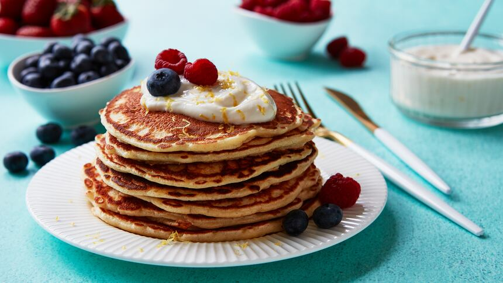

Pancakes

Classic Pancakes
Description
Light, fluffy pancakes that are perfect for breakfast and easy to customize with your favorite toppings.
Ingredients
- 1 1/2 cups all-purpose flour
- 3 1/2 tsp baking powder
- 1 tbsp sugar
- 1/4 tsp salt
- 1 1/4 cups milk
- 1 egg
- 3 tbsp melted butter
- 1 tsp vanilla extract
Steps
- In a bowl, mix the flour, baking powder, sugar, and salt.
- In another bowl, whisk together the milk, egg, butter, and vanilla.
- Combine the wet and dry ingredients until just mixed.
- Heat a lightly greased skillet over medium heat.
- Pour batter onto the skillet to form pancakes.
- Cook until bubbles form on the surface.
- Flip and cook until golden brown.
- Serve warm with syrup or toppings of choice.
Previous pages